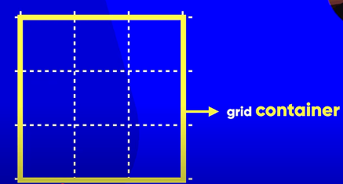
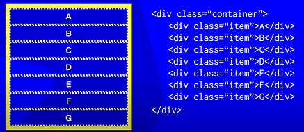
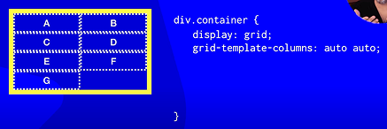
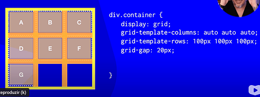

Grid Layout
O que é um Grid Layout?
O Grid Layout é uma forma de organizar os elementos na tela como se fosse uma tabela invisível, com linhas e colunas.
Você escolhe quantas colunas e quantas linhas o seu layout vai ter, e onde cada item vai ficar.
Quando configuramos um elemento pai com display: grid, ele se torna um container de grade, e os elementos filhos passam a ser organizados de acordo com essa grade.
Ao usar apenas display: grid, sem definir colunas com grid-template-columns, o Grid cria, por padrão, uma única coluna. Os itens filhos são empilhados verticalmente, um embaixo do outro.
Quando você usa grid-template-columns ou grid-template-rows, cada valor que você coloca representa uma coluna ou uma linha.
Infográfico
   Como você define o tamanho?
Você pode usar diferentes unidades: fr → Fração do espaço disponível, px → Tamanho fixo em pixels, % → Porcentagem do espaço do container pai e auto → Ajusta de acordo com o conteúdo
Obs.: O container pai vai crescer automaticamente conforme o conteúdo interno e o que você definiu nas linhas e colunas. Se você usar fr, o grid divide o espaço que tem disponível. Se você usar px, o tamanho será fixo, e o container pode ficar maior se os itens não couberem.
O que é gap no CSS Grid?
gap é o espaço entre os itens do grid. É como o “vão” entre os tijolos em uma parede. Ele não afeta o tamanho dos itens, apenas a distância entre eles.
Tipos de Gap
- gap: define ao mesmo tempo o espaço entre linhas e colunas
- row-gap: define apenas o espaço entre as linhas
- column-gap: define apenas o espaço entre as colunas